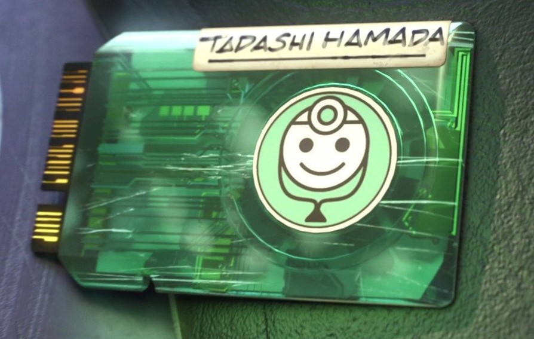
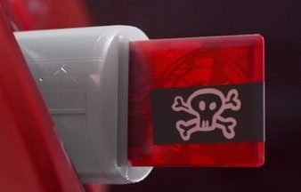
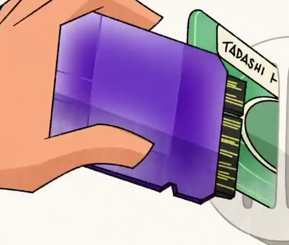
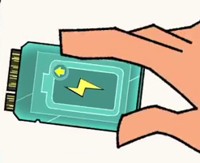
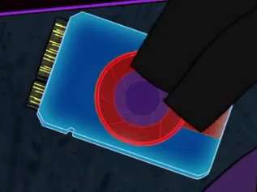
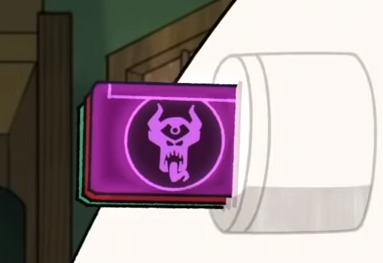
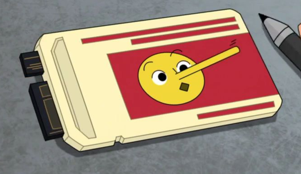
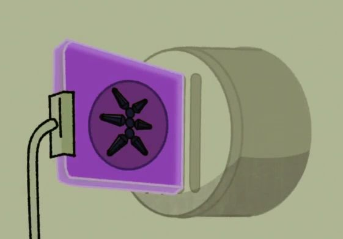

la première puce de Baymax et celle de médecin c'est d'ailleurs accesoirement celle de base car c'est pour cette fonction que bayamx a été conçu, elle permet à Baymax de réagir quand les gens émettent un son de douleur et de les soigner, mais soigner pas que physiquement mais également mentalement.
Sa seconde puce est une puce de "combat"(j'apellerai plutôt ca une puce de kill). C'est une puce le rendant violent car sa puce de médecin lui interdit il s'en sert mais s'en débarasse quasiment tout de suite après.
Sa troisiéme puce est une puce de super-héros, elle a le même programme que la puce de combat mais garanti la sécurité des autres quand la puce de médecin est retiré il peut également sauvé des gens grace a elle.

Sa quatriéme puce est une puce de danseur elle lui permet de danser, elle est créer pur aider fred pour son Gala.
Sa cinquiéme puce est une puce de charge booster,Hiro a créé cette puce quand les batteries de Baymax s’étaient épuisées après qu’ils soient allés sur le service de super-héros. Il l’a inséré le lendemain matin avec l’intention de surclocker les supercondensateurs de Baymax pour faire durer ses batteries plus longtemps, mais il a donné Baymax un comportement rapide et erratique.
Sa sixiéme puce est inspiré d'un fanfic de quelqu'un, avec cette,il devient plus grand et devient plus puissant, et ses ailes deviennent capables de se transformer en une épée. Cependant, l’inconvénient est qu’il dure un temps très court car sa consomme beaucoup de batterie.
Sa septiéme puce est la puce de Obake qui le fait réagir au ordre de Obake. Cependant, il a également compromis la programmation de soins de santé de Baymax, qui a non seulement empêché Baymax de répondre à l’activation vocale, mais a également causé Baymax d’adopter une personnalité plus menaçant
Sa huitiéme puce est la puce de détecteur de mensonges dite puce pinochio. la puce rend capable d’afficher immédiatement si quelqu’un dit la vérité ou le mensonge. Hiro a plus tard sorti la puce, il s'est rendu compte que de transformer Baymax en un détecteur de mensonges n’était pas sa meilleure idée.
Sa neuviéme puce est la puce nanorobots, elle permet à Baymax de contrôler à distance les nanobots (versions nanométriques de microbots)
sa derniére puce n'est pas la sienne, c'est celle de Mini-max. Lapuce est de couleur Bleu avec une tête de Mini-max et il y a écrit mini-max dessus. Quand il l'échange c'est comme s'il échangeaient de corps. Hiro échange leur Puce car Mochi (un chat) s'est coincée dans un conduit et Baymax n'y passait pas alors, Hiro a échangé les puces car Mini-max passait dans le conduit. Mochi s'est retrouvé dans le conduit car il doit aller chez le vétérinaire mais a peur d'y aller. Au moment du réechange Mini-max dit attendez et profite une derniére fois du corps de Baymax voici ce qu'il fait.